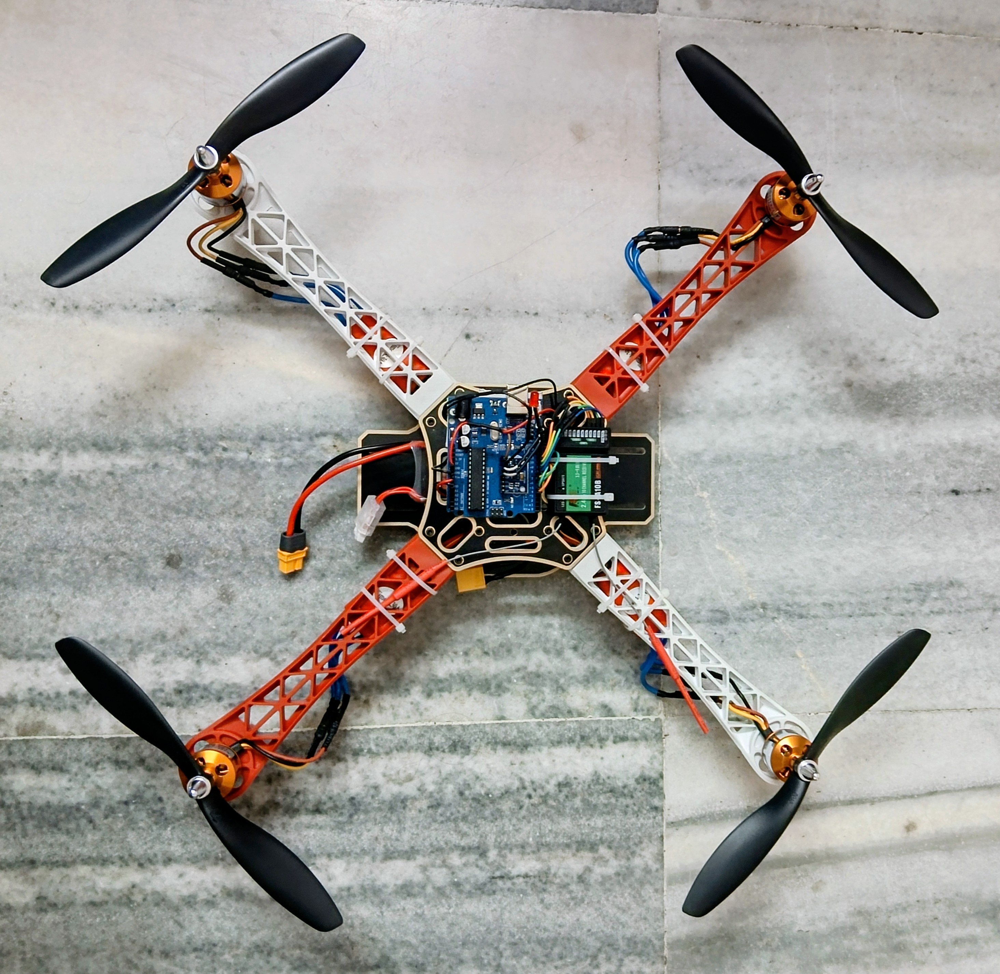
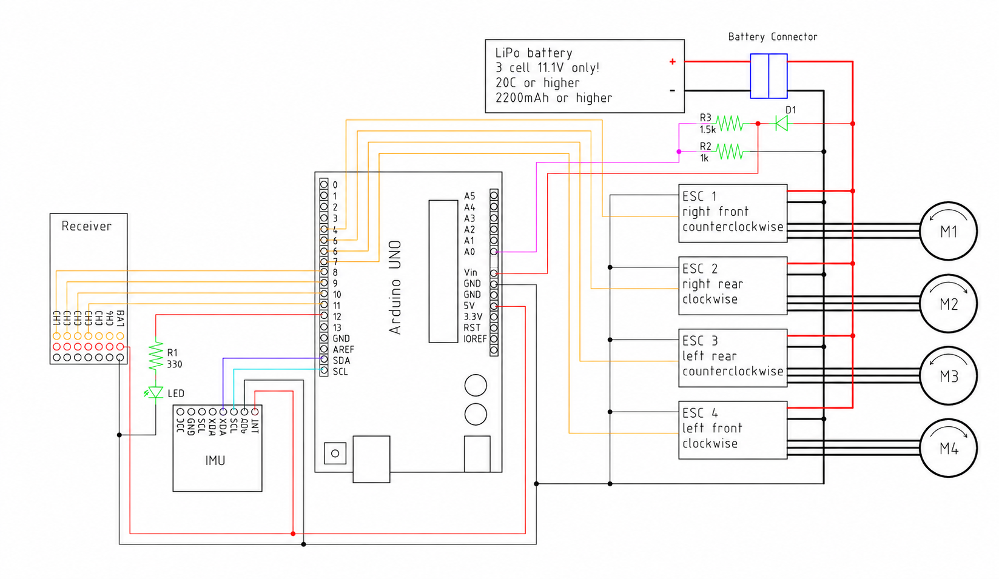

RC
QUADCOPTER
Development and assembly of a 450-size quadcopter incorporating an Arduino-based flight controller with inertial sensor feedback for attitude stabilisation. The project involved electronic integration, flight controller installation, calibration, transmitter configuration and system testing.

SYSTEM OVERVIEW
The quadcopter system combines radio-control commands with inertial sensor feedback to stabilise the vehicle during operation. Control commands from the transmitter are received by the onboard receiver and processed by the Arduino flight controller. Attitude measurements from the IMU are used by the controller to determine the required corrections before generating motor commands for the four electronic speed controllers.
TRANSMITTER
CONTROLLER
FEEDBACK
MOTORS × 4
HARDWARE CONFIGURATION
450 SIZE FRAME
Quadrotor airframe used as the structural platform for the propulsion and electronics systems.
4 × 1200 kV MOTORS
Brushless motors paired with 10 × 4.5 propellers and electronic speed controllers.
3S LiPo BATTERY
2200 mAh, 20C lithium-polymer battery supplying the propulsion system.
ARDUINO UNO
Microcontroller used for flight-control processing and integration with the receiver and IMU.
IMU MODULE
Gyroscope and accelerometer-based sensor module used to provide vehicle attitude information.
FLYSKY FS-i6
Six-channel transmitter used to provide pilot control commands to the flight controller.
ELECTRONICS & CIRCUIT INTEGRATION

SIGNAL INTEGRATION
The IMU provides gyroscope and accelerometer measurements to the Arduino flight controller.
Receiver channels provide pilot commands from the FlySky transmitter.
The Arduino processes control inputs and sensor feedback to determine motor commands.
Output signals are sent to four electronic speed controllers which regulate the brushless motors.
ASSEMBLY & DEVELOPMENT PROCESS
FRAME ASSEMBLY
Assembly of the 450-size quadcopter frame and installation of the propulsion components.
MOTOR & ESC INSTALLATION
Installation and connection of the brushless motors, propellers and electronic speed controllers.
FLIGHT ELECTRONICS
Integration of the Arduino controller, IMU sensor and radio receiver into the airframe.
CONTROLLER CONFIGURATION
Uploading and configuring the flight-control software for the Arduino-based controller.
SENSOR CALIBRATION
Calibration of the inertial sensor and verification of sensor orientation and response.
SYSTEM TESTING
Verification of motor response, control inputs, sensor feedback and overall system behaviour.
AUTO-LEVELLING CONTROL SYSTEM
The auto-levelling system uses inertial measurements to estimate the attitude of the quadcopter. The measured orientation is compared with the commanded attitude from the pilot.
Any difference between the desired and measured attitude produces a correction command which is used to modify the motor outputs and stabilise the vehicle.
SOFTWARE ATTRIBUTION
OPEN-SOURCE FLIGHT CONTROL SOFTWARE
The flight-control software used in this project was based on an open-source implementation developed by an independent creator.
My contribution focused on the physical implementation of the system, including circuit construction, electronic integration, quadcopter assembly, controller installation, calibration and testing.
The original flight-control source code is not reproduced or redistributed as part of this project archive.
PROJECT DOCUMENTATION
Additional flight testing imagery and documentation will be added during future testing sessions.